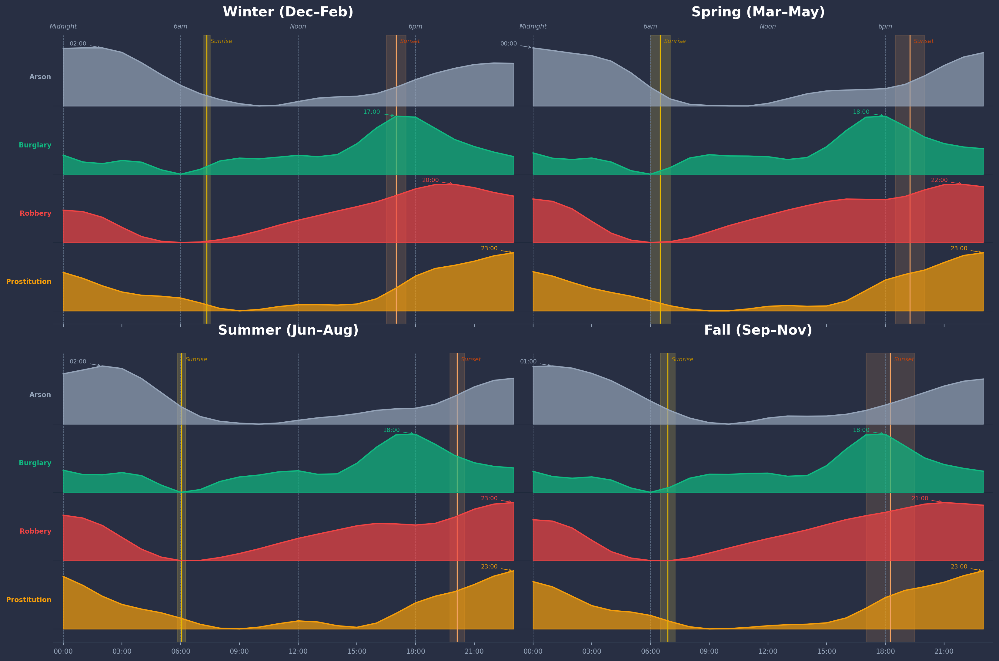

San Francisco
After Dark
An analysis of 20 years of San Francisco crime data, charting what happens to the city once the sun goes down.
Published
April 6, 2026
Authors
Nick Tahmasebi, Filip Sahakian, Destin Zhong
S an Francisco keeps meticulous records of its crimes. Since 2003, the SFPD has logged every reported incident — the time, the place, the type. Over twenty years and roughly 800,000 incidents later, a pattern emerges: certain crimes don't just happen more at night, they belong to the night. This is a story about four of them.
The four crimes at the center of this story — prostitution, robbery, burglary, and arson — were selected because they each show a distinct and consistent pattern when you plot them by hour of the day. They peak after dark, dip at sunrise, and repeat that rhythm across every season, every year, every district. Together they paint a picture of a city that operates on two very different schedules.
The data comes from the San Francisco Police Department's public incident report database, covering January 2003 through early 2025. It is a record of what was reported, not necessarily what happened — a distinction worth keeping in mind as you read.
Where Crime Moves Through the Night
Press play and watch how the four focus crimes — prostitution, robbery, burglary, and arson — shift across San Francisco hour by hour.
Incident Density
Analysis
The map makes one thing immediately clear: after midnight, crime in San Francisco is not spread evenly across the city. It collapses into a handful of corridors — the Tenderloin, the Mission, and the stretch of Market Street between them. During the day the density flattens out and spreads. After dark it concentrates. Use the slider to watch that shift happen in real time.
It is also worth noting what the data cannot tell you: a hotspot on this map reflects where incidents were reported, not necessarily where crime is most prevalent. Areas with fewer reports may simply have lower rates of reporting.
The Rhythm of Crime Across the Seasons
The four crimes don't just peak at night — they each follow a distinct daily rhythm that shifts with the seasons. Burglary follows the light. Robbery follows the crowd. Prostitution and arson belong almost entirely to the dark.
Each row shows the 24-hour distribution of one crime type, min-max scaled so the shape of the rhythm is visible regardless of total volume. Sunrise and sunset bands mark the transition between day and night for each season. Peaks are annotated at the hour of highest activity.
The most striking pattern across all four panels is not what changes — it is what stays constant. Prostitution peaks at 23:00 whether it is January or July. But robbery tells an even more precise story: its peak hour shifts with the seasons, yet it consistently falls approximately three hours after sunset, every single season. In winter, when San Francisco goes dark around 17:00, robbery peaks near 20:00. In summer, sunset pushes past 20:00, and robbery follows, peaking around 23:00. That locked relationship — darkness plus three hours — suggests a behavioural pattern so embedded it does not need a calendar. It tracks the sun.

The hourly and seasonal rhythms hold year after year with remarkable consistency. But zoom out to the full two-decade window and a different question emerges: not when crime happens, but how much — and whether the four crimes move together or apart over time.
"Burglary's peak hour tracks sunset almost exactly — earlier in December, later in June, as if calibrated to the last moment of usable light."
That precision is what makes these patterns worth studying over time. Each crime responds to a different trigger — light, crowds, cover of darkness — and those triggers do not shift at the same rate as the city changes around them.
San Francisco's Night Life in Numbers — A Story over Twenty Years
Annual incident counts for all four crimes from 2003 to 2025. Use the legend to isolate individual crimes, or toggle all at once with the buttons.
Analysis
Across twenty years, the four crimes do not move as one. Burglary and robbery track broader economic cycles, rising through the mid-2010s before pulling back later in the decade. Prostitution falls sharply and never fully recovers — a drop driven as much by shifting enforcement priorities as by any change in actual prevalence.
Arson stays low and flat throughout, dwarfed in volume by the other three. Isolating individual crimes using the legend makes the scale differences stark: at peak, burglary outnumbers arson by an order of magnitude.
How to interact
- Click a crime in the legend to show or hide it
- Double-click a crime to isolate it and hide the rest
- Show All / Hide All buttons reset or clear the view
- Click and drag on the chart to zoom into a time range
- Double-click the chart to zoom back out
- Hover over any point to see the exact year and count
Exploring the Data
Our full dataset, normalization techniques, and district boundary definitions are available for public review in the technical repository.